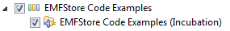

How to use the EMFStore examples
In this tutorial you will learn how to use the EMFStore example.
Follow the steps below to setup emfstore, import the example projects into workspace and to run them.
The Examples
- Basic example (hello world) - demos how to use the EMFStores API
- Creates a project, shares it with the server, adds EObjects to the project and commits the changes.
- Checkouts the same project twice as project2, modifies an EObject and commits the changes to the server.
- Updates project1 from the server and asserts, that the project1 values now equals project2.
- Merging example - demos how conflicts can be produced, handled and resolved
- Creates a project, shares it with the server, adds a model element to it and commits the changes.
- Checkouts the same project twice as project2.
- Creates a conflict by changing value of project1 and project2 and committing both projects.
- Handles "conflict exception" by a custom ConflictResolver. Custom resolver will only accept changes from conflicting project (project2).
- Commits changes from conflicting project.
- Update project1 and assert that values are equal again.
A new example for "sessionprovider" is in work right now. If you have any ideas about required examples, just let us know!
Step 1: Get EMF Store and EMF Client Platform
This tutorial will assume that you have a running Eclipse with the plugins EMF Store and EMF Client Platform installed, and that you know how to create and share a new project in the EMF Client Platform.
Please refer to the setup tutorials to get started.
Please install the code example feature from the update site. It is part of EMFStore releases from version 0.9.0 or later.

Step 2: Importing the examples
If you followed both tutorials above step by step, importing the examples into workspace is really simple.
Just use the "New example wizard" and all steps are done automatically.
"right Click >>> New >>> Example".

And then selected the example to be imported."Next >>> Finish".

And as a result, the project will be created in the workspace.

Step 3: Project structure
The structure of the example project is really simple. The source folder contains the example application. It can be started like any other Eclipse application. If you want to follow the different steps more in details, set break point in the Application.java class.
Step 4: Run the example client
To run the example, you have to process two steps.
- Run the EMFStore server
- Run the EMFStore example
To run the server, just create a new Run Configuration, select the application "org.eclipse.emf.emfstore.server.application" and run the server. To have a clean set-up you might want to delete the .emfstore folder in your home directory, this is the place where EMFStore will store its data per default.
To start one of the clients create another Run Configuration and select either:
- org.eclipse.emf.emfstore.example.helloworld.example
- org.eclipse.emf.emfstore.example.merging.merging